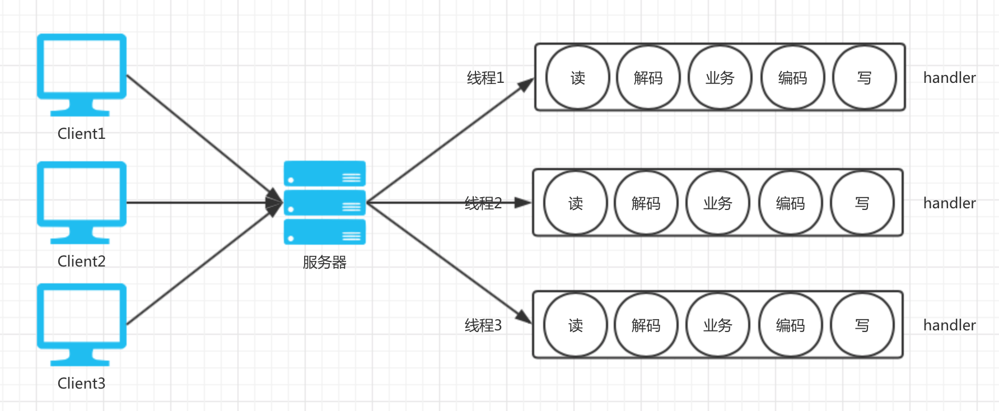
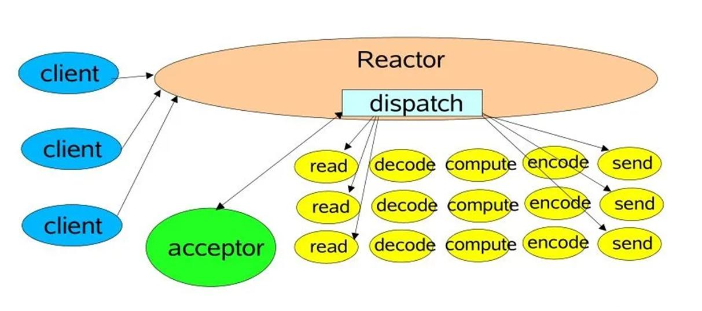
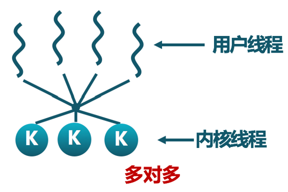
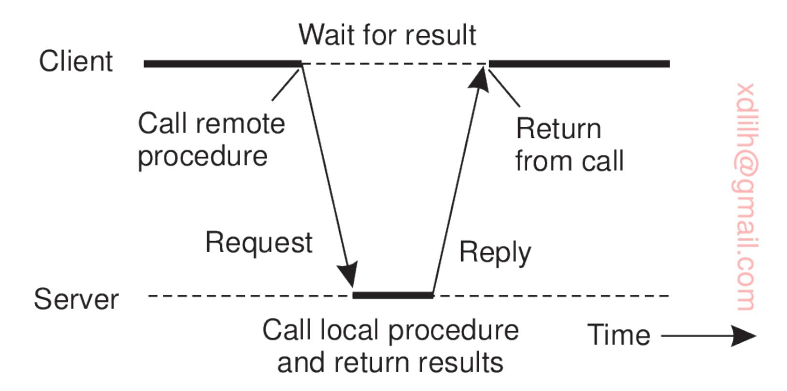
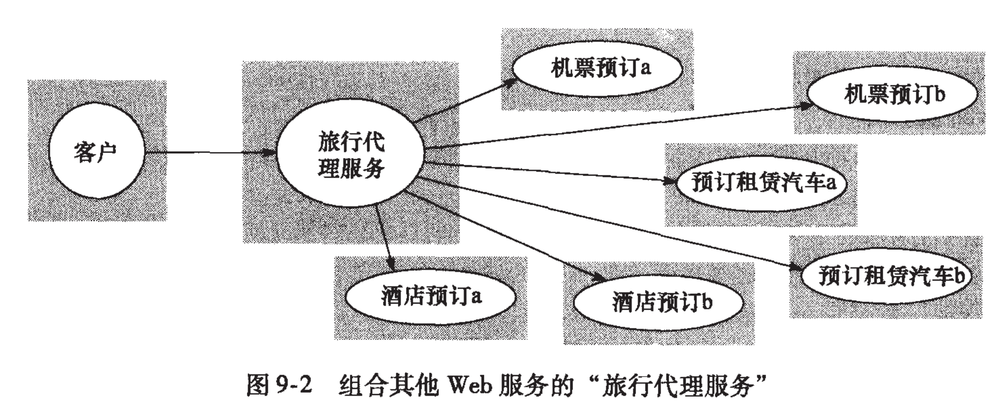
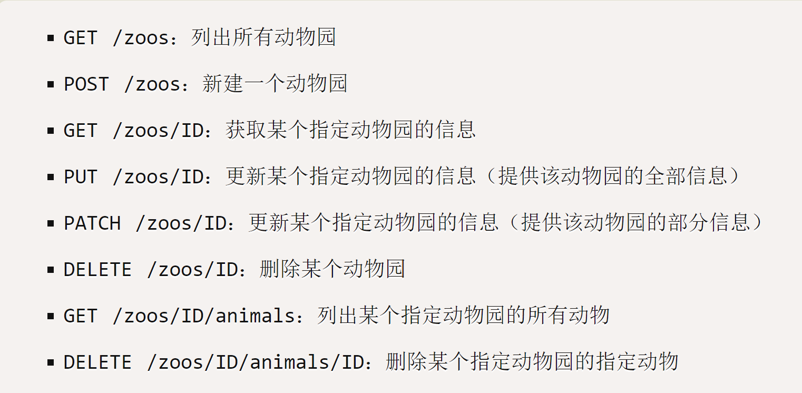

分布式系统中，不同计算节点之间的通信是整个系统协作的基础。本讲涵盖从底层到上层的完整通信技术栈：
TCP/IP协议栈先于OSI模型出现，不完全符合OSI标准。TCP/IP为4层协议，OSI为7层协议：
| TCP/IP 4层模型 | OSI 7层模型 | 主要协议 |
|---|---|---|
| 应用层 | 应用层、表示层、会话层 | HTTP, FTP, SMTP, DNS |
| 传输层 | 传输层 | TCP, UDP |
| 网络层 | 网络层 | IP, ICMP, IGMP |
| 网络接口层 | 数据链路层、物理层 | ARP, RARP |

图1：TCP/IP 与 OSI 协议栈对比
各层网络协议的存在位置：
注意：TCP/IP也可分为五层模型，将网络接口层分为数据链路层和物理层两层。
Socket（套接字）是传输层和网络层提供给应用层的标准化编程接口。应用程序通过Socket API进行网络通信，无需关心底层协议细节。
Application layer Application layer
Process <---> Process
Socket <---> Socket
Transport layer <---> Transport layer
Network layer <---> Network layer
Link layer <---> Link layer
Physical layer <---> Physical layer
Host A Host B
| Socket类型 | 特点 | 面向连接 | 对应传输层协议 |
|---|---|---|---|
| 流式套接字 (SOCK_STREAM) | 面向连接、可靠、字节流 | 是 | TCP |
| 数据报套接字 (SOCK_DGRAM) | 无连接、不可靠、数据报 | 否 | UDP |
| 原始套接字 (SOCK_RAW) | 可直接访问底层协议 | — | 自定义 |

图2：Socket 通信模型
一个Socket由五元组唯一标识：
$$\langle \text{srcIP}, \text{srcPort}, \text{dstIP}, \text{dstPort}, \text{协议} \rangle$$
常见知名端口：HTTP(80)、HTTPS(443)、FTP(21)、SSH(22)、SMTP(25)、DNS(53)等。
服务器端 客户端
socket() 创建套接字 socket() 创建套接字
↓ ↓
bind() 绑定地址和端口 ↓
↓ ↓
listen() 监听端口 ↓
↓ ↓
accept() 接受连接 ←——————————— connect() 连接服务器
↓ ↓
read() 接收请求 ←——————————— write() 发送请求
↓ ↓
write() 回送响应 ———————————→ read() 接收响应
↓ ↓
close() 关闭套接字 close() 关闭套接字
TCP特点：面向连接、三次握手建立连接、可靠传输、字节流无边界。
服务器端 客户端
socket() 创建套接字 socket() 创建套接字
↓ ↓
bind() 绑定地址和端口 ↓
↓ ↓
recvfrom() 接收请求 ←————————— sendto() 发送请求
↓ ↓
sendto() 回送响应 —————————→ recvfrom() 接收响应
↓ ↓
close() 关闭套接字
UDP特点：无连接、不保证可靠送达、保留消息边界、支持广播和组播。
如何使服务器端同时处理多个客户端的服务请求？以下是几种主要的并发服务技术：
这是非常重要的一种并发模型：
关键理解：Reactor模型用单线程+非阻塞I/O+事件循环，实现了少量线程处理海量连接的能力，避免了多线程的上下文切换开销。典型代表有Node.js的事件循环、Nginx的事件驱动架构。
Reactor vs Proactor：Reactor是"事件就绪时通知我，我自己读"；Proactor是"帮我完成I/O操作，完成后通知我"。Proactor依赖操作系统对异步I/O的支持。
协程（用户线程、虚拟线程、轻量线程）是完全建立在用户空间的"线程"，其创建、调度、同步和销毁全部由应用层的运行时库在用户空间完成，不需要内核的帮助。
普通单线程程序： 包含2个协程的单线程程序：
═══════════════ ═══════════════════════
main() 顺序执行 协程1: 处理客户端A
↓ (切换)
协程2: 处理客户端B
↓ (切换)
协程1: 继续处理客户端A
...
| 并发技术 | 核心思想 | 适用场景 |
|---|---|---|
| 多线程/线程池 | 每个请求一个线程 | CPU密集型、需要利用多核 |
| 事件驱动(Reactor)+单线程 | 单线程IO多路复用 | 大量短任务（如静态资源服务） |
| 协程（虚拟线程） | 用户态轻量级并发 | 大量并发连接、IO密集型 |
图3：三种并发服务模型对比 — 多线程 / Reactor / 协程

图4：并发服务模型示意
远程过程调用（Remote Procedure Call，RPC）：使应用程序可以像调用本地节点上的过程（子程序）一样去调用一个远程节点上的子程序。
思考：如果不用RPC中间件，自己用Socket API实现远程过程调用，需要完成的工作：建立TCP连接 → 序列化函数名和参数 → 发送 → 等待响应 → 反序列化结果 → 处理各种异常情况。RPC中间件将所有这些复杂性封装起来。
远程方法调用（Remote Method Invocation，RMI）：将面向对象的编程模型扩展到了分布式环境。
注意：在很多文档中，不严格区分RPC和RMI。一般提到RPC这个名词，经常也指在面向对象模型下调用远程对象的某个方法。
RPC/RMI中间件承担了以下关键功能：
通信协议实现：定义并利用Socket服务接口实现了调用者和被调用者之间的通信协议（远程过程调用协议），例如Java RMI的JRMP（Java Remote Method Protocol）
序列化/反序列化：实现了过程参数的序列化与反序列化、过程运算结果的序列化与反序列化
错误处理机制：实现了通信过程中的错误处理，包括三种语义：
Exactly once（恰好一次）：肯定执行一次且仅执行一次（最难实现，需要幂等处理）
服务注册与发现：提供过程服务进程（或远程对象）的集中注册与发现（目录服务）
对象管理：远程对象的统一标识和生命周期管理
并发支持：在服务端支持并发访问（往往采用多线程技术）
RPC中间件的核心是Stub（桩）/Skeleton（骨架）代理机制：
接收服务器返回的结果并反序列化，返回给调用者
Skeleton模块（服务端骨架）：
将结果序列化并返回给客户端
Stub模块与Skeleton模块之间利用Socket进行通信

图5：RPC 中间件 Stub/Skeleton 架构
以调用 k = add(3, 5) 为例，逐步说明RPC的完整执行过程：
| 步骤 | 客户端机器 | 服务器机器 |
|---|---|---|
| 1 | 客户端进程调用 k = add(3, 5) |
|
| 2 | Client Stub捕获调用，将 proc: add, int: 3, int: 5 序列化为消息 |
|
| 3 | Client OS通过网络将消息发送出去 | Server OS通过网络接收消息 |
| 4 | Server Skeleton接收消息并反序列化 | |
| 5 | Server Skeleton调用服务端进程中的本地 add(3, 5) 实现 |
|
| 6 | 服务端执行 8 = add(3, 5) |
|
| 7 | Server Skeleton将结果 8 序列化为消息 |
|
| 8 | Server OS将消息 Result, int: 8 发回 |
|
| 9 | Client OS接收 Result, int: 8 |
|
| 10 | Client Stub反序列化得到 8 |
|
| 11 | 客户端进程得到 k = 8 |
图6：RPC 远程过程调用流程（Stub/Skeleton 机制）
整个过程中，客户端程序员只需写 k = add(3, 5)，所有网络通信细节被完全隐藏。
对于支持跨编程语言调用的RPC/RMI中间件而言，还需要定义一套独立于各类编程语言的接口定义语言（Interface Definition Language，IDL）。
IDL的作用：
IDL配套工具：
idl2Java、idl2CPP 等：将IDL转化为具体语言的代码gRPC的IDL示例（使用Protocol Buffers，.proto文件）：
syntax = "proto3"; // 使用的版本
option java_package = "autogenerated";
option java_multiple_files = true;
// 服务接口定义，服务端和客户端都要遵循该接口进行通信
service CalculatorService {
// 远程调用方法
rpc add(CalRequest) returns(CalResponse) {}
}
// 定义请求消息
message CalRequest {
string first = 1;
string second = 2;
}
// 定义响应消息
message CalResponse {
string result = 1;
}
基于IDL的代码自动生成流程：
编程语言无关的RPC接口定义（.proto文件）
↓ 工具自动生成 ↓ 工具自动生成
Golang Client Proxy 源码 Java Server Proxy 源码
↓ ↓
Golang Client 主程序 Java RPC Server 主程序
CalculatorService.add(...) class MyCalculator implements CalculatorService
RPC中间件一般还包含注册中心/远程过程发现中心：客户端在调用前从注册中心"发现"服务的位置，服务端启动时向注册中心"注册"自己提供的服务。
RPC一般采用同步调用方式：调用者发出请求后阻塞等待，直到收到服务器返回的结果才继续执行。这与消息中间件的异步通信形成对比。
| 中间件 | 特点 | 跨语言 |
|---|---|---|
| Java RMI | Java原生支持，仅限Java之间调用 | 否 |
| .NET Remoting | .NET原生支持，仅限.NET之间 | 否 |
| CORBA | 重量级分布式对象中间件，历史悠久 | 是 |
| gRPC | Google出品，基于HTTP/2+Protobuf，高效 | 是 |
| Thrift | Facebook/Apache出品，高效 | 是 |
| Hessian | 基于HTTP+二进制序列化 | 是 |
| Dubbo | 淘宝开源，Java生态 | 部分 |
| Motan | 新浪开源，Java生态 | 部分 |
| WebService | 基于HTTP+SOAP/XML/JSON | 是 |
| Google Protocol Buffers | 对象序列化标准和开发库（gRPC的序列化基础） | 是 |
服务端：
from xmlrpc.server import SimpleXMLRPCServer
def add(a, b):
return a + b
def echo(msg):
return f"Server received: {msg}"
server = SimpleXMLRPCServer(("127.0.0.1", 8000))
server.register_function(add, "add")
server.register_function(echo, "echo")
server.serve_forever()
客户端：
import xmlrpc.client
proxy = xmlrpc.client.ServerProxy("http://127.0.0.1:8000/")
result = proxy.add(3, 5) # 就像调用本地函数一样
print(result) # 输出: 8
Web Service是为方便网络上不同节点之间互操作而定义的一套协议标准，也可视为实现远程过程调用的一套协议标准（W3C定义）。其核心特征：
Web Service主要包含以下标准协议：
| 层次 | 协议/标准 | 作用 |
|---|---|---|
| 消息编码 | XML | 统一的数据编码格式 |
| 传输协议 | HTTP, SMTP, TCP, UDP | 底层通信承载 |
| 远程对象访问协议 | SOAP（Simple Object Access Protocol） | 远程方法调用协议，定义消息格式 |
| 服务描述 | WSDL（Web Services Description Language） | 描述服务接口定义（类似于IDL） |
| 服务注册/发现 | UDDI（Universal Discovery Description and Integration） | 服务目录、服务注册、服务发现 |
| 安全 | 签名、加密、认证等标准 | 通信安全 |
| 服务组合 | 服务编排标准 | 组合多个服务形成新服务 |
SOAP（Simple Object Access Protocol）是Web Service的核心协议，它定义了远程方法调用的消息格式。
SOAP请求示例（获取股票价格）：
POST /InStock HTTP/1.1
Host: www.example.org
Content-Type: application/soap+xml; charset=utf-8
<?xml version="1.0"?>
<soap:Envelope
xmlns:soap="http://www.w3.org/2001/12/soap-envelope"
soap:encodingStyle="http://www.w3.org/2001/12/soap-encoding">
<soap:Body xmlns:m="http://www.example.org/stock">
<m:GetStockPrice>
<m:StockName>IBM</m:StockName>
</m:GetStockPrice>
</soap:Body>
</soap:Envelope>
SOAP响应示例：
HTTP/1.1 200 OK
Content-Type: application/soap+xml; charset=utf-8
<?xml version="1.0"?>
<soap:Envelope
xmlns:soap="http://www.w3.org/2001/12/soap-envelope"
soap:encodingStyle="http://www.w3.org/2001/12/soap-encoding">
<soap:Body xmlns:m="http://www.example.org/stock">
<m:GetStockPriceResponse>
<m:Price>34.5</m:Price>
</m:GetStockPriceResponse>
</soap:Body>
</soap:Envelope>
WSDL（Web Services Description Language）： - 用XML格式描述Web服务的接口 - 包括：服务提供的方法、方法的参数和返回值类型、服务的访问地址（URL） - 作用类似于RPC中的IDL
UDDI（Universal Discovery Description and Integration）： - 分布式Web服务的信息注册中心/目录服务 - 服务提供者向UDDI注册服务描述（WSDL） - 服务请求者从UDDI查找所需服务，获取WSDL
服务请求者 ──(查找WSDL)──→ UDDI注册中心 ←──(注册WSDL)── 服务提供者
↓ ↓
└────────── (绑定调用SOAP/HTTP) ──────────→ Web服务
服务端实现流程： 1. 用高级编程语言（如Java）定义Web服务接口 2. 根据Java接口自动生成WSDL（中间件工具自动完成） 3. 定义实现接口的Web服务实现类 4. 将Web服务实现类绑定到Web服务器（如Tomcat） 5. 将Web服务注册到UDDI中心
客户端调用流程： 1. 从UDDI中心查找目标Web服务的接口定义（即WSDL） 2. 根据WSDL自动生成Web服务代理类（WSDL to Java） 3. 利用Web服务代理类调用Web服务接口中定义的具体方法
XML是Web Service协议栈的基础，也是SOAP消息的编码格式：
一个格式正规的XML文档由三部分组成： 1. 序言（prolog）：XML声明、样式表引用（可选） 2. 文档主体（body）：包含实际数据内容 3. 尾声（epilog）：注释等可选内容
XML示例：
<?xml version="1.0" encoding="GB2312"?>
<?xml-stylesheet href="style.xsl" type="text/xsl"?>
<!-- 以上是XML文档的序言部分 -->
<COLLEGE>
<TITLE>计算机学院</TITLE>
<LEADER>王志东</LEADER>
<STU_NUMBER unit="人">3</STU_NUMBER>
<STUDENT>
<NAME>李文</NAME>
<AGE>21</AGE>
<SEX>男</SEX>
<CLASS>9902</CLASS>
</STUDENT>
</COLLEGE>
<!-- 以上是文档的主体部分 -->
HTTP（HyperText Transfer Protocol）是Web Service的传输层协议：
HTTP请求报文格式：
request-line
headers（0或多个）
<空行>
body（只对某些请求有效）
request-line格式：
请求方法 相对URL路径 协议版本请求方法 相对URL路径HTTP请求方法：
| 方法 | 含义 |
|---|---|
| GET | 请求读取一个页面/资源 |
| HEAD | 请求读取页面的头信息 |
| PUT | 请求存储一个页面 |
| POST | 请求为已命名文件添加信息 |
| DELETE | 请求删除一个网页 |
| LINK | 连接两个已有资源 |
| UNLINK | 切断两个已有资源的连接 |
HTTP响应报文格式：
status-line
headers（0或多个）
<空行>
body
status-line格式：HTTP版本号 response代码 response-phrase
HTTP响应状态码分类：
| 状态码类别 | 含义 |
|---|---|
| 1xx | 信息型，当前不用 |
| 2xx | 成功，服务器成功接受请求 |
| 3xx | 重定向，需采取进一步行动 |
| 4xx | 客户端错误，请求中有错误 |
| 5xx | 服务器错误，无法满足有效请求 |
REST（Representational State Transfer，表述性状态转移）：
前端（HTML + JavaScript） ←→ 后端（RESTful API）
负责用户界面逻辑 负责数据和业务逻辑
RESTful API设计示例：
| HTTP方法 | URI | 操作 |
|---|---|---|
| GET | /api/users | 获取所有用户 |
| GET | /api/users/1 | 获取ID为1的用户 |
| POST | /api/users | 创建新用户 |
| PUT | /api/users/1 | 更新ID为1的用户 |
| DELETE | /api/users/1 | 删除ID为1的用户 |
仅支持点对点通信的缺点：
解决方案——增加中介节点（消息中间件）：
面向消息中间件（Message Oriented Middleware，MOM）提供了一种分布式消息队列服务，使得节点之间可以实现基于消息的形式灵活的异步通信。
异步的含义： - 发送方可以在任意时刻发出消息，不必等待接收方上线，更不必等待消息发送成功再做下一步工作 - 接收方不必以阻塞方式等待消息的到来
节点1 节点2 节点3
│ 发布 │ 广播 │ 订阅
└──────────┼──────────┘
虚拟总线（分布式消息队列）
┌──────────┼──────────┐
│ 订阅 │ 订阅 │ 发布
节点4 节点5 节点...
| 特性 | 消息队列模式（Queue） | 主题/订阅模式（Topic） |
|---|---|---|
| 基本机制 | 生产者→队列（FIFO）→消费者 | 生产者→主题→多个订阅者 |
| 消息分发 | 点到点（Point-to-Point） | 一对多（广播/组播） |
| 消费者关系 | 竞争消费：一条消息只能被一个消费者取走 | 共享消费：同一主题的所有订阅者都收到消息 |
| 消息删除 | 消息一旦被某个消费者取走，即从队列中删除 | 消息被所有订阅者消费后（根据策略）删除 |
| 负载均衡 | 出队消息按某种负载均衡策略发送给特定消费者 | 所有订阅者同时收到，无负载均衡概念 |
| 适用场景 | 任务调度、订单处理、削峰填谷 | 事件通知、广播、实时数据推送 |
| 消费者是否重复消费 | 否 | 是（每个订阅者都收到） |
图7：消息队列模式 vs 发布/订阅模式对比
高级队列模式特点： - 支持优先级队列：消息可设置优先级，优先级高的先被消费 - 支持持久性队列：消息可持久化到磁盘，确保不丢失
| 接收方式 | 描述 | 特点 |
|---|---|---|
| 阻塞接收 | 调用receive()后阻塞等待，直到消息到达才返回 | 简单直观，但线程被占用无法做其他事 |
| 轮询接收 | 周期性主动调用receive()检查是否有新消息 | 灵活但可能存在空轮询浪费CPU，有延迟 |
| 回调接收（通知接收） | 注册一个消息监听器（Listener），消息到达时MOM自动回调 | 效率最高，实时性好，资源利用率高 |
缓存模式：
| 模式 | 描述 |
|---|---|
| 持久化模式（Persistent） | MOM将消息缓存在内存的同时，还保存一份拷贝到持久化存储器（如硬盘）。消息成功投递后同时删除内存和硬盘中的消息。MOM崩溃重启后继续投递未成功投递的持久化消息 |
| 非持久化模式（NonPersistent） | 只在内存中缓存消息，MOM崩溃后消息丢失 |
投递模式（消息传输保证语义）：
| 投递语义 | 含义 | 实现难度 |
|---|---|---|
| At most once（至多一次） | 消息可能会丢失，但绝不会重复投递 | 低 |
| At least once（至少一次） | 消息绝不会丢失，但可能会重复投递 | 中 |
| Exactly once（恰好一次） | 每条消息肯定会被投递一次且仅投递一次 | 高（需要幂等处理） |
互联网电商平台在应对秒杀、双十一等突发访问峰值场景时，利用分布式消息中间件的策略：
| 中间件 | 特点 |
|---|---|
| ActiveMQ | Apache出品，完全兼容JMS，支持AMQP协议，需部署中心服务器 |
| RabbitMQ | Erlang实现，支持AMQP协议，最初起源于金融系统，高可靠性 |
| RocketMQ | 阿里开源，Java实现，被广泛应用于订单、交易、充值等场景 |
| Apache Kafka | 完全分布式架构，与Hadoop、Spark、Flink等集成方便，高吞吐 |
| ZeroMQ | 号称史上最快的消息队列，基于C语言开发 |
| WebsphereMQ | IBM的商业MOM中间件产品 |

图8：消息中间件（MOM）架构
除了RPC和消息队列之外，分布式系统中不同节点之间还可以采用以下通信方式：
RESTful API（基于HTTP）：轻量级、跨平台、跨语言，使用标准的HTTP方法（GET/POST/PUT/DELETE）对资源进行操作，是当前Web服务的主流通信方式
WebSocket：基于TCP的全双工通信协议，支持客户端和服务器之间的实时双向通信，适用于实时消息推送、在线聊天、实时数据展示等场景。与HTTP不同，WebSocket建立连接后保持长连接
组通信（Group Communication）：
开源代表：JGroups
共享内存/分布式共享内存：通过虚拟共享内存机制实现不同节点间的数据共享
远程直接内存访问（RDMA）：高性能计算场景中，绕过操作系统直接访问远程节点内存
水平可扩展性（Horizontal Scalability）： - 通过增加服务器节点数量来提升系统的处理能力 - 负载均衡器将客户端请求分发到多个后端服务器 - 当请求量增长时，只需添加更多的后端服务器，然后将其加入负载均衡器的分发列表 - 相比垂直扩展（升级单台服务器硬件），水平扩展成本更低、理论上可无限扩展
可用性（Availability）： - 负载均衡器可以检测后端服务器的健康状态 - 当某台后端服务器故障时，负载均衡器自动将请求转发到其他健康的服务器 - 故障切换（Failover）对客户端透明，提高了整体系统的可用性
| 策略 | 描述 | 优点 | 缺点 |
|---|---|---|---|
| 轮询（Round Robin） | 依次将请求轮流分发给各服务器 | 简单，各服务器请求数均匀 | 不考虑服务器当前负载和性能差异 |
| 加权轮询（Weighted Round Robin） | 根据服务器性能分配不同权重，权重高的分配更多请求 | 适应服务器性能异构 | 权重配置依赖经验，仍不考虑实时负载 |
| 最少连接（Least Connections） | 将请求发给当前活跃连接数最少的服务器 | 动态适应负载差异 | 需要实时统计连接数，开销较大 |
| IP哈希（IP Hash） | 对客户端IP地址做哈希，根据哈希值将请求映射到固定服务器 | 同一客户端请求总发往同一服务器，适合需要会话保持的场景 | 服务器增减时哈希映射会改变 |
| 源地址哈希的一致性哈希 | 基于一致性哈希算法，降低服务器增减时的映射变化 | 服务器增减时只需重新分配部分请求 | 实现复杂度较高 |
图9：负载均衡架构 — 水平扩展与故障切换

图10：负载均衡架构示意
结论：当后端服务器都实现了缓存机制时，IP哈希策略更适合。
原因： - 后端服务器的缓存通常是本地缓存，存储的是该服务器处理过的请求数据 - 如果使用轮询或最少连接策略，同一用户的多次请求可能被分配到不同的服务器 - 分配到不同服务器时，缓存命中率会很低（因为另一台服务器上没有该用户的数据缓存） - 使用IP哈希策略，同一客户端IP的请求始终被路由到同一台后端服务器，使得该服务器可以利用本地缓存，显著提高缓存命中率 - 另一种替代方案是使用分布式缓存（如Redis），此时缓存不在单个服务器本地，负载均衡策略的选择更加灵活
ActiveMQ是由Apache出品的开源消息中间件： - 完全兼容JMS（Java Message Service） - 支持STOMP协议（可通过Python的stomp.py库访问） - 提供Web控制台（http://localhost:8161）进行管理 - 必须部署中心服务器作为消息路由代理 - 可运行在Java环境下（需要JDK 1.8+）
| 对比维度 | Topic（发布/订阅） | Queue（消息队列） |
|---|---|---|
| 消息分发 | 广播：所有订阅者都收到 | 竞争：消息分配给不同消费者 |
| 消费者收到 | 每消费者都收到全部消息 | 消息在多消费者间分配（负载均衡） |
| 典型场景 | 通知、事件广播 | 任务调度、作业分发 |
| 是否重复消费 | 是 | 否 |
实验结果： - Topic模式：每个Consumer都会收到消息 "Hello Topic" - Queue模式：5条任务消息被分配给不同消费者（如Consumer1收到Task 0,2,4；Consumer2收到Task 1,3）
原题：从应用程序员角度看，RPC技术的主要作用是什么？（4分）
解析/答案： RPC（远程过程调用）技术的主要作用是简化分布式系统中应用程序员的开发工作。具体而言：
原题：简述远程过程调用RPC的实现原理和RPC中间件的主要作用。（6分/4分）
解析/答案：
（一）RPC的实现原理（Stub/Skeleton机制）：
RPC中间件在调用者进程中植入Stub（桩）/Proxy模块，该模块： - 作为远程过程的本地代理，暴露与远程过程相同的接口 - 当客户端调用时，Stub捕获该调用，将过程名和参数序列化为网络消息 - 通过网络（Socket）将消息发送给服务器端 - 接收服务器返回的结果消息，反序列化后返回给调用者
RPC中间件在被调用者进程中植入Skeleton（骨架）模块，该模块： - 作为调用者在远程主机中的代理 - 负责监听Socket端口，接收客户端的调用请求 - 反序列化请求消息，提取过程名和参数 - 调用本地的实际过程实现，获取结果 - 将结果序列化后通过网络返回给客户端的Stub
Skeleton相当于Client-Server模式中的服务器端，要先于客户端运行。
（二）RPC中间件的主要作用：
原题：支持跨编程语言调用的RPC中间件系统中，如CORBA和gRPC，都会定义专用的接口定义语言（IDL：Interface Definition Language），请问IDL语言的作用是什么？（2分）
解析/答案： IDL（接口定义语言）的作用是：
原题：简述发布/订阅模式和消息队列模式的区别。（4分）
解析/答案：
| 对比维度 | 消息队列模式（Queue） | 发布/订阅模式（Topic） |
|---|---|---|
| 消息消费方式 | 点到点（Point-to-Point） | 一对多（广播/组播） |
| 消费者关系 | 竞争消费：一条消息只能被一个消费者取走 | 共享消费：同一主题的所有订阅者都收到消息副本 |
| 消息状态 | 消息一旦被某个消费者取走，即从队列中删除 | 消息被所有订阅者各自消费，不因被某一订阅者接收而删除 |
| 负载均衡 | 出队消息在多个消费者间按负载均衡策略分配 | 无负载均衡概念，所有订阅者同时收到 |
| 典型应用场景 | 任务调度、订单处理 | 事件通知、实时数据广播 |
核心区别：Queue是一对一的竞争消费，一条消息只被处理一次；Topic是一对多的广播，每个订阅者都能收到消息。
原题：消费者接收消息的三种方式是什么？（3分）
解析/答案： 消费者从消息中间件接收消息的三种方式是：
阻塞接收（Blocking Receive）：调用接收方法后，线程阻塞等待，直到消息到达才返回。简单但线程被占用。
轮询接收（Polling Receive）：周期性调用接收方法来检查是否有消息到达，有则返回消息，无则立即返回（或等待超时）。灵活但存在空轮询的CPU浪费。
回调接收（Callback/Listener Receive）：注册一个消息监听器（Listener），当消息到达时，MOM自动回调监听器的onMessage方法。效率最高，实时性好，不需线程持续等待或轮询。
原题：分布式节点之间基于消息中间件进行通信有哪些优点？（4分）
解析/答案：
原题：写出三种并发服务技术及其适用场景（事件驱动适合大量短任务）。（分值不详）
解析/答案：
| 并发服务技术 | 核心原理 | 适用场景 |
|---|---|---|
| 多线程/线程池 | 每个请求由一个独立线程处理，可阻塞I/O | CPU密集型任务、需要利用多核的场景 |
| 事件驱动（Reactor）+ 单线程 | 单线程+IO多路复用+非阻塞I/O，监控多个Channel并分发事件 | 大量短事务（如HTTP静态文件服务、消息转发） |
| 协程（虚拟线程） | 用户态轻量级线程，单线程或多线程上下文，切换开销极小 | 大量并发IO密集型连接（如API网关、微服务间调用） |
补充说明： - 事件驱动（Reactor）模型适合大量短任务的原因：避免了多线程频繁切换的上下文切换开销，非阻塞I/O使得单线程即可高效处理大量并发连接；但当单个任务执行时间较长时，会阻塞整个事件循环，因此只适合短任务。 - 协程模型允许以同步编程风格写异步代码，比Reactor模式更容易编写和维护，是目前（如Go、Java 21+虚拟线程）的趋势。
原题：写出RPC的实现思想及Stub/Skeleton的作用。（分值不详）
解析/答案：
RPC的实现思想： 使应用程序可以像调用本地过程一样调用远程节点上的过程，通过中间件将网络通信细节完全封装，对调用者和被调用者均透明。核心思想是"让分布式调用像本地调用一样简单"。
Stub的作用（客户端）： - 部署在客户端进程中，作为远程过程的本地代理 - 暴露与远程过程完全相同的接口 - 负责将本地过程调用序列化为网络消息（过程名+参数），通过Socket发给服务端 - 接收服务端返回的结果并反序列化，返回给客户端调用者
Skeleton的作用（服务端）： - 部署在服务端进程中，作为调用者在服务端的代理 - 被动监听Socket端口，接收客户端的调用请求 - 将网络消息反序列化，提取过程名和参数 - 调用本地的实际过程实现 - 将执行结果序列化后通过网络返回给客户端
原题：写出MOM的作用。（分值不详）
解析/答案： MOM（面向消息中间件）的主要作用：
原题：Web Service的实现：服务端和客户端分别如何实现？（分值不详）
解析/答案：
服务端实现流程： 1. 用常用高级编程语言（如Java）定义Web服务接口 2. 根据Java定义的Web服务接口，利用中间件工具自动生成WSDL（Web服务描述语言文件） 3. 定义实现该接口的Web服务实现类（编写具体业务逻辑） 4. 将Web服务实现类绑定/部署到Web服务器（如Tomcat）上 5. 将Web服务注册到UDDI注册中心（服务目录），供客户端查找
客户端实现流程： 1. 从UDDI注册中心查找目标Web服务的接口定义（WSDL文件） 2. 利用工具根据WSDL生成Web服务代理类（如WSDL to Java） 3. 利用生成的Web服务代理类调用Web服务接口中定义的具体方法（就像调用本地方法一样）
核心思路：服务端通过WSDL描述自己提供的服务并注册到UDDI；客户端从UDDI获取WSDL，生成代理类，通过代理类调用远程Web服务。SOAP作为通信协议在HTTP上承载XML格式的请求和响应消息。
原题：要实现一个支持高并发访问的Web网站系统，如何利用负载均衡技术提高该网站的水平可扩展性？如何提高网站的可用性？（4分）
解析/答案：
提高水平可扩展性： - 在前端部署负载均衡器（如Nginx、HAProxy），将客户端请求分发到后端多台Web服务器 - 当访问量增长时，通过增加后端服务器节点来提升整体处理能力（水平扩展） - 新服务器加入后，将其加入负载均衡器的分发列表，无需修改前端代码或客户端配置 - 实现理论上可无限的水平扩展能力，成本低于垂直扩展（升级单台服务器硬件）
提高可用性： - 负载均衡器定期对后端服务器进行健康检查（如心跳检测） - 当检测到某台服务器故障时，自动将其从分发列表中移除，不再向其转发请求 - 当故障服务器恢复后，自动将其重新加入分发列表 - 故障切换对客户端完全透明，用户不会感知到后端某台服务器失效 - 通过多台服务器冗余部署，消除了单点故障（SPOF）
原题：列举5种常用的负载均衡策略。（5分）
解析/答案：
轮询（Round Robin）：依次将请求轮流分配给各台服务器，各服务器分配的请求数基本均匀
加权轮询（Weighted Round Robin）：根据服务器性能给每台服务器分配不同权重，权重高的分配更多请求
最少连接（Least Connections）：将请求分配给当前活跃连接数最少的服务器，动态适应负载差异
IP哈希（IP Hash）：对客户端IP地址做哈希运算，根据哈希值将请求映射到固定的服务器。同一客户端IP的请求总是被路由到同一台服务器，适用于需要会话保持（Session Sticky）的场景
源地址哈希的一致性哈希：基于一致性哈希算法，降低服务器增减时的映射重新分配范围，提高缓存命中率
原题：在用服务器集群实现Web服务系统时，如果完成实际服务运算的后端服务器都实现了缓存机制，那么采用哪种负载均衡策略更适合？为什么？（4分）
解析/答案：
结论：采用IP哈希策略更适合。
原因： - 后端服务器的缓存通常是本地缓存，存储的是该服务器处理过的请求数据 - 如果用轮询或最少连接策略，同一用户的多次请求可能被分配到不同的后端服务器 - 请求分配到不同服务器时，本地缓存无法被利用（另一台服务器上没有该用户的相关缓存数据），导致缓存命中率低 - 使用IP哈希策略，同一客户端IP的请求始终被路由到同一台后端服务器，该服务器可以持续利用本地缓存服务同一用户，显著提高缓存命中率 - 高缓存命中率意味着减少数据库查询、减少计算，提高系统整体性能和响应速度
补充：使用分布式缓存（如Redis集群）是另一种解决方案，此时缓存不依赖于具体服务器，负载均衡策略的选择更加灵活。
原题：互联网电商平台在应对秒杀、双十一突发访问峰值等场景时如何利用分布式消息中间件提高系统的高并发服务能力？（4分）
解析/答案：
互联网电商平台利用分布式消息中间件应对高并发场景的核心策略是削峰填谷和异步解耦：
避免了请求峰值直接击垮后端服务（数据库、库存系统等）
异步解耦：
各环节独立伸缩、独立部署，一个环节慢不会阻塞整个流程
缓冲保护：
队列消息可持久化到磁盘，保证数据的可靠性
弹性伸缩：
原题：除了RPC和消息队列通信方式，分布式系统中不同节点之间还可以采用哪些通信方式？（列举2种）（4分）
解析/答案：
当前微服务架构中最主流的通信方式之一
WebSocket：
与HTTP相比，WebSocket连接建立后无需反复握手，通信开销更小
组通信（Group Communication）（补充提及）：
代表：JGroups中间件
RDMA（远程直接内存访问）（补充提及）：
（任选2种作为考试答案即可）
原题：写出5种负载均衡策略，IP哈希的思想。（分值不详）
解析/答案：
五种负载均衡策略（同题目12）： 1. 轮询（Round Robin） 2. 加权轮询（Weighted Round Robin） 3. 最少连接（Least Connections） 4. IP哈希（IP Hash） 5. 一致性哈希（Consistent Hashing）
IP哈希的思想： 对客户端IP地址做哈希运算，根据哈希值将请求映射到固定的后端服务器。核心思想是使得来自同一客户端IP的请求始终被分配到同一台服务器，保证了会话的粘滞性（Session Stickiness），有利于服务器本地缓存的高效利用。IP哈希策略使服务器可以记住之前为该客户端处理的状态（如果状态存储在本地）。
IP哈希公式示例：server_index = hash(client_IP) % server_count
原题：中间件的作用。（分值不详）
解析/答案：
中间件（Middleware） 是位于操作系统和应用软件之间的软件层，在分布式系统中起着关键的"粘合剂"作用。其主要作用包括：
具体到本课件中的中间件：
| 通信方式 | 同步/异步 | 耦合度 | 典型协议 | 适用场景 |
|---|---|---|---|---|
| TCP Socket | 同步 | 紧耦合 | TCP | 低频、可靠的点对点通信 |
| UDP Socket | 同步 | 紧耦合 | UDP | 实时音视频、日志上报 |
| RPC/RMI | 同步（为主） | 较紧（接口耦合） | 私有协议/HTTP2 | 微服务间调用 |
| Web Service/SOAP | 同步 | 较松 | HTTP+SOAP/XML | B2B集成、跨企业协作 |
| RESTful API | 同步 | 松耦合 | HTTP+JSON | Web API、前后端分离 |
| MOM（消息队列） | 异步 | 松耦合 | AMQP/STOMP等 | 任务分发、削峰填谷 |
| MOM（发布订阅） | 异步 | 松耦合 | AMQP/STOMP等 | 事件通知、广播 |
| WebSocket | 异步 | 较紧 | WebSocket协议 | 实时推送、聊天 |
| 方式 | 机制 | CPU利用 | 实时性 | 编程复杂度 |
|---|---|---|---|---|
| 阻塞接收 | 线程等待消息到达 | 低（线程阻塞不占CPU） | 高 | 简单 |
| 轮询接收 | 周期性主动查询 | 可能有空轮询浪费 | 取决于轮询间隔 | 中等 |
| 回调接收 | 注册Listener被动通知 | 高（只在有消息时执行） | 最高 | 较高 |